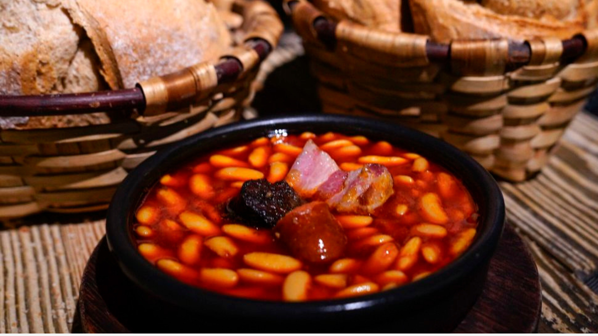

Fabada Asturiana
★★★★☆
⏱ 2h 30min

Ingredientes (4 personas)
Para la fabada
- • 500 g de alubias blancas (de Granja Asturiana)
- • 2 morcillas asturianas
- • 2 chorizos asturianos
- • 250 g de tocino entreverado
- • 1 lacón (opcional)
Aromáticos
- • 1 cebolla grande
- • 4 dientes de ajo
- • 1 pimiento verde italiano
- • 2 hojas de laurel
- • Azafrán o colorante alimentario (opcional)
- • Sal al gusto
Preparación
1
Remojo y primer hervor
Tiempo: 12 horas (remojo) + 10 min (cocción)
- Lava las alubias bajo el grifo y descarta las que floten.
- En un recipiente grande, cúbrelas con agua fría (3 dedos por encima).
- Añade 1 cucharadita de sal y deja remojar toda la noche.
2
Cocción lenta
Tiempo: 2-3 horas
- En una olla grande, pon las alubias escurridas con agua fría nueva.
- Añade todos los ingredientes del compango (morcilla, chorizo, tocino).
- Incorpora los aromáticos: cebolla entera pelada, ajos, pimiento y laurel.
- Fuego medio-bajo: Hierve lentamente sin remover, solo moviendo la olla ocasionalmente.
- Retira la espuma que se forme en los primeros 15 minutos.
3
Reposo y presentación
Tiempo: 15 min (reposo)
- Cuando las alubias estén tiernas (prueba una), retira del fuego.
- Saca los ingredientes del compango y corta en porciones.
- Deja reposar la fabada 15 minutos antes de servir (espesará el caldo).
- Sirve en cazuela de barro con el compango por encima.
Pulpo a Feira
★★★★★
⏱ 1h 10min

Ingredientes
Principal
- • 1 pulpo fresco (1.5-2 kg)
- • 4 patatas medianas (cachelos)
Acompañamiento
- • 2 cucharadas de pimentón dulce de La Vera
- • Aceite de oliva virgen extra
- • Sal gruesa marina
Preparación
1
Cocción "asustada"
Tiempo: 40-50 min
- Hierve agua en una olla grande sin sal.
- Técnica gallega: Sumerge el pulpo 3 veces (5 segundos cada una) antes de soltarlo definitivamente.
- Cuece a fuego medio. Cuando el agua vuelva a hervir, cuenta 35-40 minutos.
2
Corte y presentación
Tiempo: 10 min
- Escurre el pulpo y corta las patas en rodajas de 1 cm con tijeras.
- Sirve en madera con patatas cocidas ("cachelos").
- Aliña con aceite de oliva, pimentón dulce y sal gruesa.
Pitu de Caleya
★★★★☆
⏱ 1h 45min

Ingredientes
Principal
- • 1 pollo campero troceado (1.5 kg)
- • 2 cebollas grandes
- • 4 dientes de ajo
Acompañamiento
- • 1 vaso de vino blanco (sidra también vale)
- • 1 cucharada de pimentón dulce
- • Aceite de oliva, sal y laurel
Preparación
1
Sofrito base
Tiempo: 10 min
- En una cazuela, dora los ajos y cebollas picados en aceite de oliva.
- Añade el pimentón y remueve rápido para que no se queme.
2
Guisar el pollo
Tiempo: 45 min
- Incorpora los trozos de pollo y dóralos por todos lados.
- Vierte el vino blanco o sidra y deja reducir 5 minutos.
- Añade agua hasta cubrir, una hoja de laurel y cocina a fuego lento 40 minutos.
3
Toque final
Tradición asturiana:
- Rectifica de sal y espolvorea perejil fresco al servir.
- Se suele acompañar con patatas cocidas o pan rústico.